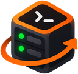

OpsBoxAfter setup you manage this server entirely from the browser. SSH can be closed for good.
Anyone who can reach this address could set it up, so opsbox asks for a one-time token. It is printed in the instance boot log, which only you can read in your cloud console.
[ 18.402] cloud-init: installing opsbox 0.1.4 [ 24.911] opsbox: listening on https://0.0.0.0:8443 [ 24.912] opsbox setup ready [ 24.912] url https://203.0.113.20:8443/setup [ 24.912] token 7QK2-9XMD-4TFA (single use, expires in 60 min)
#!/bin/bash curl -fsSL https://get.opsbox.example/install.sh | sh